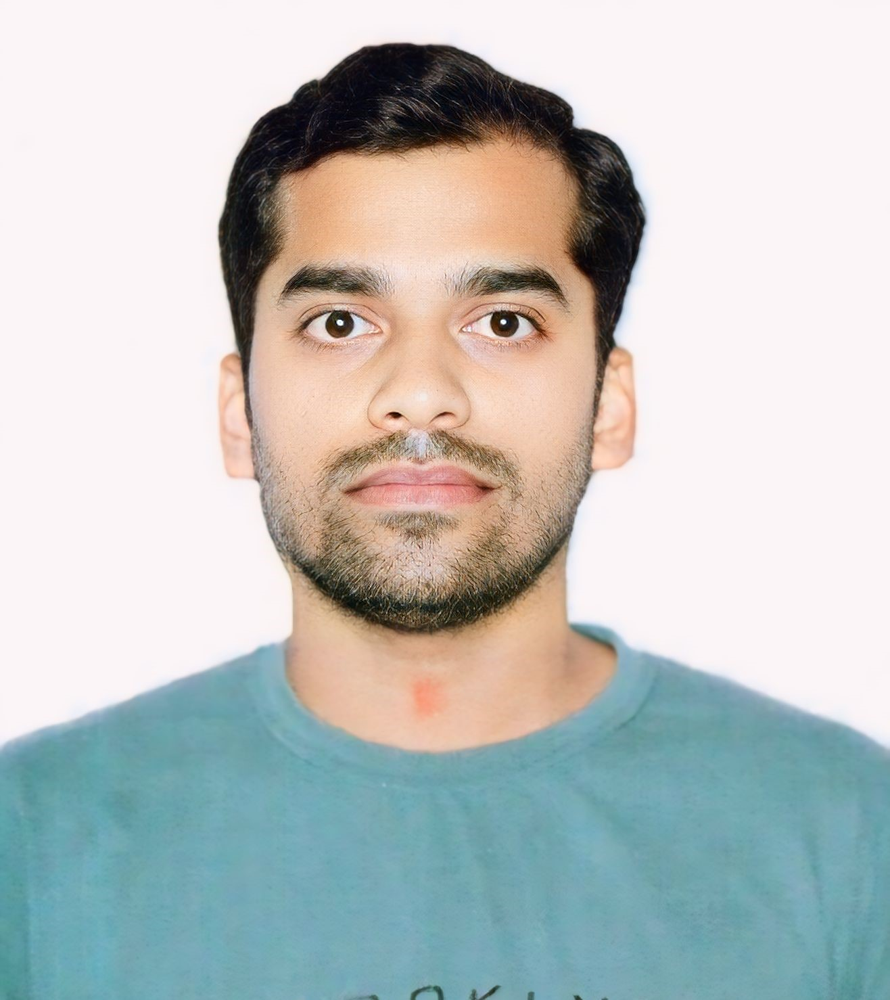

Biswajit Mohanty

Objective statement
I'm a ML Data associate at Amazon Developmemnt Centre based in Hyderabad.
I have a passion for Research and web devlopment with integration of Artificial intelligence.
Education
- MPhil Research
School of Public Health and Community Medicine, 2018-2019
UNSW Sydney
- Post Graduate (M.Sc.)
P.G. Department of Physics, Utkal University 2014-2016
- Under Graduate (B.Sc.)
Nayagarh Autonomous College Nayagarh 2011-2014
Work experience
- Machine Learning Data Associate I, Amazon Development Centre, Hyderabad, India – 2024
Skills
- Numerical Programming Using Fortran (Solved Ordinary Differential Equation by Runge-Kutta methods, Solution of Non- Linear Equation by Newton-Raphson Method, Introductory Monte Carlo techniques, Lagrange Extrapolation etc.)
- Standard Programming using C, Python
- Experience in Matlab, R, MS-office package
- Comfortable in Windows and Linux OS
- Worked in development of an eHealth web based application for patient management and booking system in a group project at UNSW
Certifications, or other achievements
- OpenEDG Python Institute: Programming with Python Professional Certification
About Me
Contact